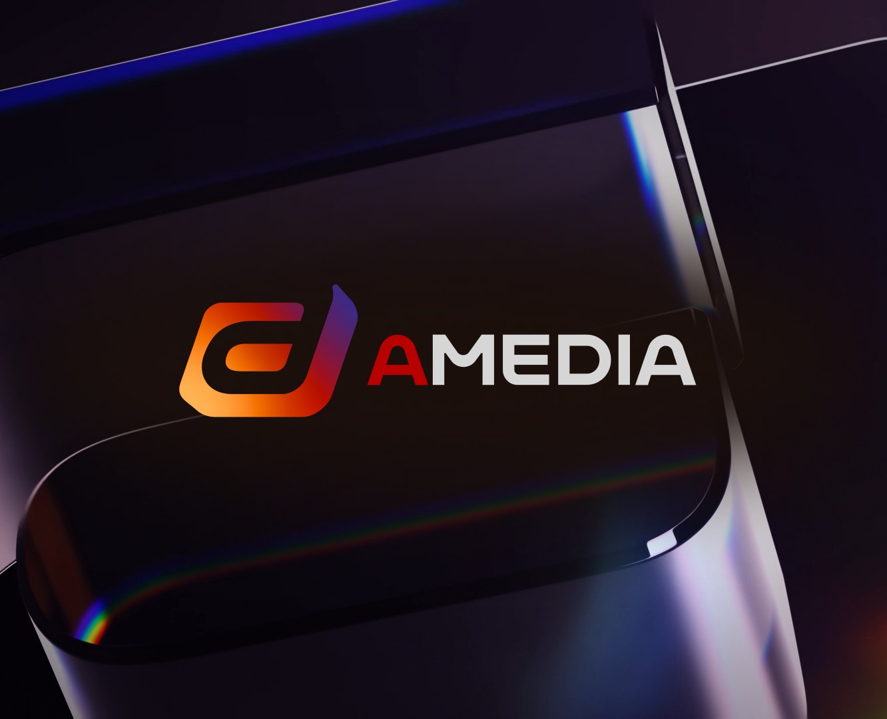

Кинокомпания АМЕДИА · 2024
АМЕДИА: обновление айдентики компании
Обновили знак и логотип кинокомпании АМЕДИА и сделали анимированную бренд-заставку.

Кинокомпания АМЕДИА обратилась к нам за обновлением логотипа и новой бренд-заставкой. За основу взяли знак с буквой «а», который Эркен Кагаров разработал в 2004 году. Уточнили форму знака и сохранили его узнаваемый образ.
Собрали кириллическую и латинскую версии логотипа. Для нового начертания взяли за основу TT Hoves Pro, основной шрифт обновлённой айдентики. Предусмотрели разные варианты компоновки для размещения логотипа и разработали анимированную бренд-заставку.